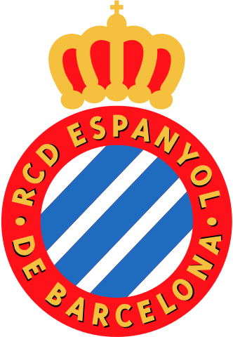
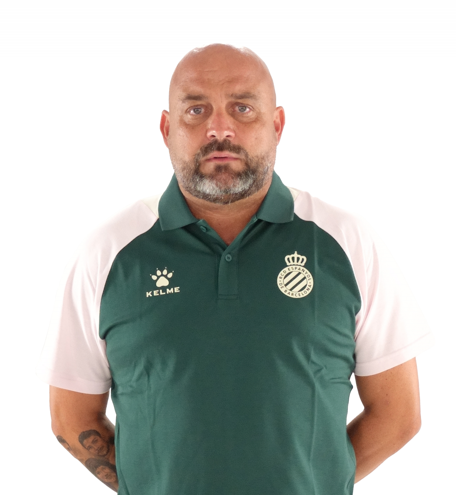

Treinador: Manolo González
Manolo González é um treinador espanhol nascido em Folgoso do Courel, reconhecido pela sua resiliência e pela capacidade de transmitir um espírito de união inabalável aos seus plantéis.

Estádio: RCDE Stadium
O RCD Espanyol joga no RCDE Stadium, um estádio moderno e funcional com cerca de 40 mil lugares, famoso pela sua arquitetura premiada e por oferecer uma das experiências mais imersivas e tecnológicas do futebol espanhol.

Estilo de Jogo:
O estilo de jogo de Manolo González no RCD Espanyol em 2026 caracteriza-se por um equilíbrio pragmático e uma organização defensiva rigorosa, refletindo a sua experiência nas divisões competitivas do futebol espanhol.
"La Força d'un Sentiment!"